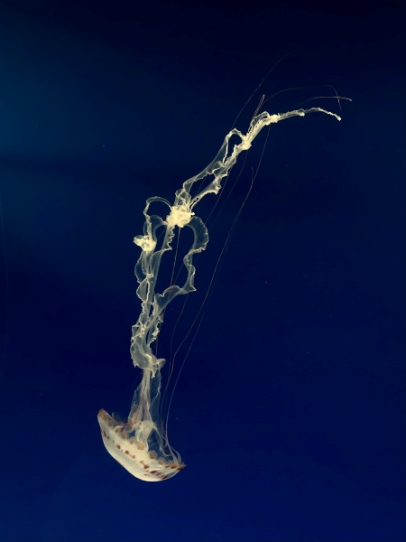
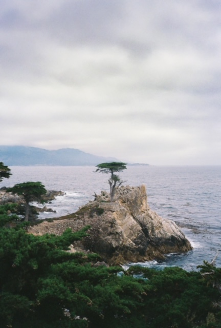

Journal 4
This image is interesting because it shows the transparency of the jellyfish quite well. The light not shown in the photo at the bottom of the tank illuminates the jellyfish, and against a dark background, the thinner parts of the animal show through.
It relates as all photos of the collection are marine animals that I’ve seen in various aquariums I’ve been to. The photo fits especially well with the other two photos in the collection that are also jellyfish.
The collection shows my deep interest in marine biology. For a majority of my life, I loved aquariums and marine animals, opting to walk around tide pools than play in the sand.
I recognize the location of the photo as the 17-mile drive, and that it is specifically at the landmark named Lone Cypress. Among the most interesting part of the image is the framing of the tree, and the overcast weather, giving the rocks a softer shadow. The image has an overall somber and moody tone.
The most mysterious part is the singular tree on the bluff. I wonder how it got there, and why are there no other trees alongside it. The obvious part is the location, as the singular cypress gives away the landmark. The image has a natural feel because of the color palette which consists of greens and blues. The greenery from the lower part of the image helps frame the tree.
Back